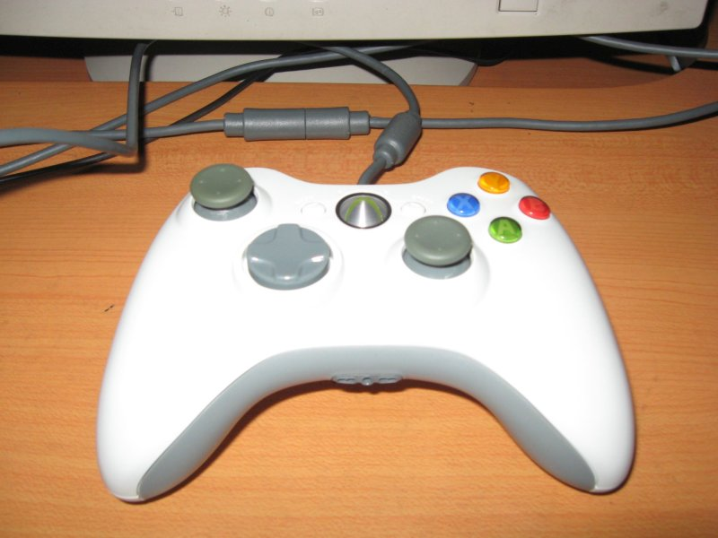
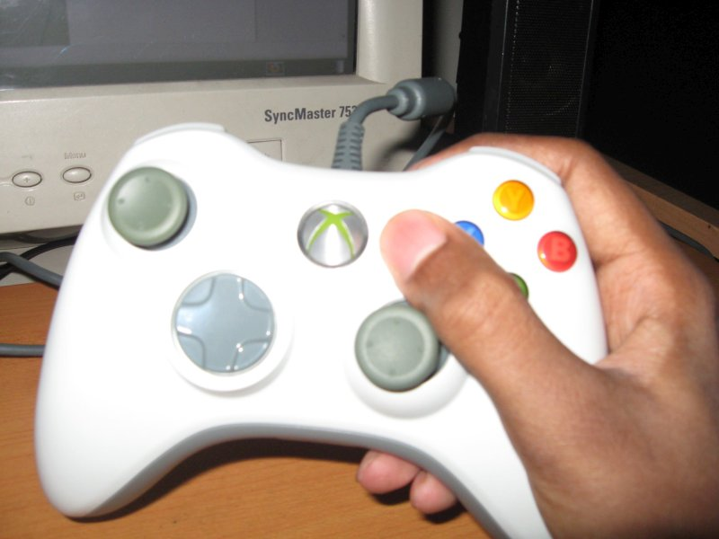
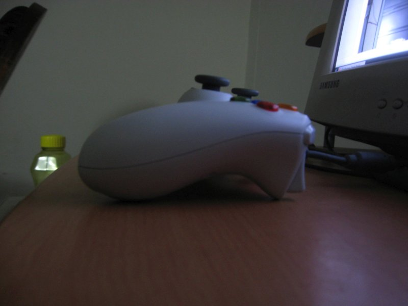
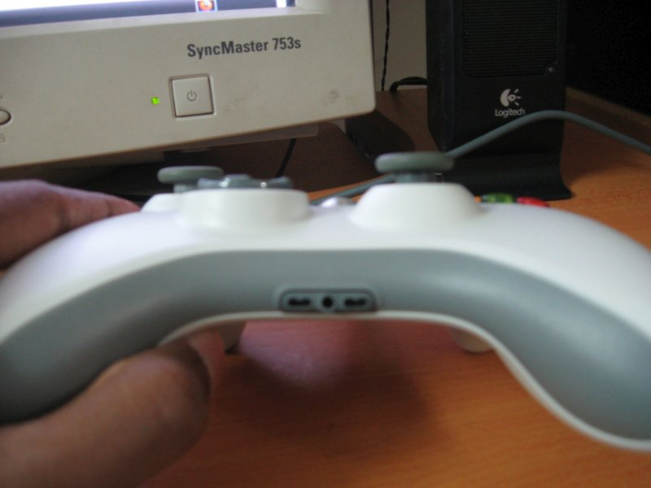
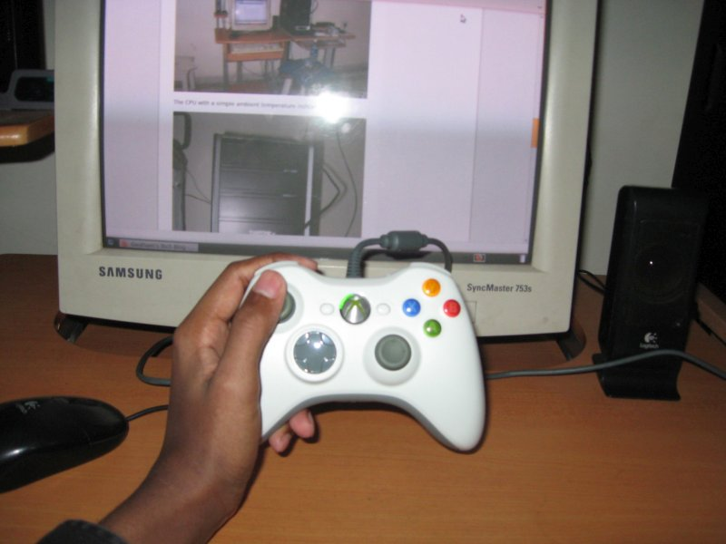
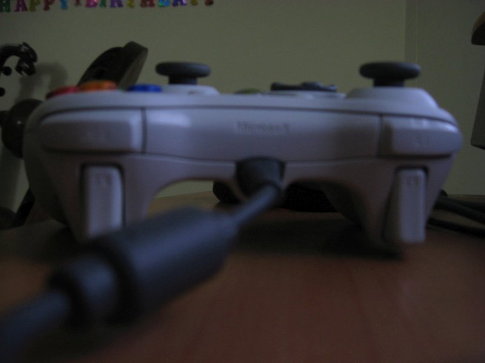

Xbox 360 Controller for Windows: Review

I bought it recently (7-Jan-2010), as I mentioned in my other post. I did some research as I did with my graphics card (though not that much, I really went all out then) and the reviews and reception seemed to be very good. My other choice was the Saitek Cyborg Rumble Pad and I still have a feeling I would’ve liked it. In the end, I had a choice: if I got the Saitek Cyborg Rumble Pad, I would have a switchable analog/D-pad module. If I got the Xbox 360 controller, I would have the 2.5 mm earphone jack. I decided to go with Saitek Cyborg but when I went to the market, it was nowhere to be found. After much effort, I bought the Xbox 360 controller for a very good deal and saved Rs.450 (about 9 USD).
I followed the instructions and plugged in the gamepad after installing the latest drivers from the website (CD had v1.2, I downloaded v1.3). It worked without a hitch, as expected. The top-left quadrant of the “Ring of Light” (the green glowing circle at the center) lights up whenever I plug it in, indicating that I’m player 1 (I’m the only “player” connected to the PC, I don’t use Xbox Live for any games). I like it a lot, as I happen to be a fanatic of things that glow ;) The most superior aspect about the controller is it’s comfort, it’s a delight to the hands. I didn’t really take it seriously when all the reviews praised this fact but when I held it for the first time, I knew exactly what they meant. After using a cheap make of a PS2 clone controller for 3 years, I just had to smile. The weight is much better on my hands. It’s very light compared to my old controller, but it’s not too light either. I can feel I’m actually holding something and that’s the way I like it. I also love the colourful buttons A, B, X and Y. They bring a lot of life, along with the ring of light. Speaking of the ring of light, upon pressing the Guide button (the large X button inside the ring of light), a small indicator comes up on the screen indicating the status of the controller and the number of players. I’m posting through Ubuntu right now and I didn’t get a screenshot, I’ll update the post when (and if) I get one. The indicator doesn’t really do anything and it’s kinda vain, but hey, the Guide button does something :) Oh, did I mention, the wire is a whopping 3 meters long! It also has a safety feature, a plug-like thing which gets separated first when the wire is pulled, protecting the ends of the wire. All of this makes the wire a little heavy, but it’s no big deal.
As for complaints, I do have a few more than I hoped. First, the lack of customizability with the default drivers is really disappointing, especially to a tweaker at heart like me. There are other drivers out there which promise a lot (really a lot), but they’re not properly compatible with Windows 7 yet, so I held back. Of course, I use the latest free version of Xpadder, so I do have some control over useful aspects like keyboard and mouse mapping and finer aspects like the dead zone settings for the analog sticks and triggers. Next, as much as I like the glowing ring of light, I dislike only a quarter of it glowing. I never connect to Xbox Live and I don’t see myself doing it in the near or far future, so I’d rather have the whole ring glowing. With only a quarter glowing, I feel like the poor old LED’s gonna pop out sooner than the others (and me being a little obsessive compulsive, the thought of a quarter of light missing is unnerving). Next, the Start button is used to pause majority of games and it’s hard to reach. Well, not exactly, it’s placed in perfect vicinity to the A, B, X, Y buttons, but the right analog stick comes in the way. Let me show you what I mean:

It might not look like much in the picture, but during gameplay, it’s a bit annoying. There’s another thing I didn’t see coming, and it has to do with the left analog stick. Remember the Saitek Cyborg Rumble Gamepad which had a switchable analog/D-pad module? I thought it was just a fancy feature, but now I find it rather useful. Sure, playing many games feels absolutely great with the analog stick, but I’m a gamepad kinda guy, I play most of the games with a gamepad when I can whether the game supports it or not (courtesy, Xpadder). I also happen to be a fan of old school RPGs and the analog seriously undermines gameplay. Even with customized deadzones, it just doesn’t feel right. I would use the D-pad, if it were a little more comfortable, but Xbox games use it as an accessory rather than for real directional control, and it’s only one large chunk of plastic. Moving it around doesn’t feel comfortable. In this aspect, my old gamepad takes the cake. Since it’s a PS2 design, it has the D-pad for main directional control and it has 4 separate buttons for each direction, which I really miss with the new gamepad. Finally, I really dislike the fact that the Guide button does nothing useful. In the Saitek gamepad, it’s used to switch between “normal” and “FPS” configurations, which is pretty slick. I wanted something like that, but alas, it’s not possible without the XBCD drivers I mentioned earlier.
Final verdict: despite the problems, I’m thoroughly enjoying it! For instance, playing H.A.W.X on it is just divine! I’m soon going to get myself a 2.5mm to 3.5mm adapter for plugging in my earphones and it’ll be all the more enjoyable.
And now, behold! Some pics for thine eyes!

The 2.5 mm headset jack. Meant for a Microsoft headset specifically made for the Xbox 360, but it’ll detect pretty much anything as a USB device: 
Fits pretty well in my hand: 
And some pics I wish I’d taken under better lighting and focal settings: 
That’s is for today people, take care.